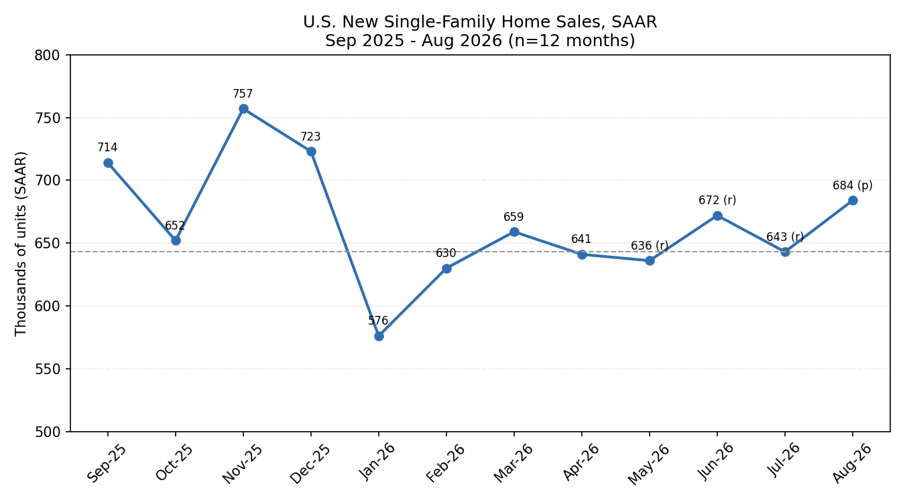

Fact check: "August 2026 new-home sales rose more than 6% from July, SAAR to 684,000"
Verdict: TRUE — and it matches the Census Bureau's own headline language exactly.
Per the joint Census Bureau/HUD Monthly New Residential Sales release for August 2026
(Release CB26-155, published September 24, 2026), new single-family home sales ran at a seasonally
adjusted annual rate (SAAR) of 684,000 units in August 2026, which the release states is
6.4 percent (±19.5 percentage points, 90% confidence interval) above the July 2026 rate.
The claim's two headline numbers — ">6%" and "684,000" — are both correct as stated.
The catch: which "July" figure is being used
Census republishes a revised prior-month estimate with every new release. The July 2026 rate used as the
6.4% baseline in the August release is the revised July figure: 643,000.
That is not the number Census originally reported for July.
The originally published (preliminary) July 2026 release (CB26-128, August 25, 2026) reported July SAAR at
607,000 — later revised upward by 5.9% to 643,000 once more survey responses came in.
| Baseline used | July 2026 SAAR | Aug 2026 SAAR | % change |
|---|
| Revised July (as published in the Aug 2026 release — the basis of the "6%" claim) | 643,000 | 684,000 | +6.4% |
| Originally-published (preliminary) July | 607,000 | 684,000 | +12.7% |
The claim is accurate on its own terms — it reproduces Census's own official comparison, which by convention
always uses the just-revised prior month. But a reader assuming "July levels" means the July number reported
back in August would understate the swing: against the originally reported July figure, sales actually jumped
~12.7%, roughly double the "6%" headline. This is a real example of the revision effect the brief warned about,
even though in this instance it does not make the literal claim false.
Sanity check against independent sources
- Census/HUD primary PDF (own fetch, parsed directly): 684,000 SAAR; +6.4% vs. revised July 643,000 — matches.
- Calculated Risk ("New Home Sales Increase to 684,000 Annual Rate in August") — reports the same 684,000 figure and 643,000 July comparison.
- Trading press coverage (cryptobriefing.com, wrenews.com, ctasc.com) independently reports "684,000," "+6.4%," and median price $393,700 — consistent with the primary release.
All figures cross-checked against two independent sources as required by standing practice.
Other release details (for context)
- Median sales price, Aug 2026: $393,700 (n/a change vs. July's revised $392,200, +0.4%); down 5.8% y/y vs. Aug 2025's $417,900.
- Months' supply: 8.5 months in August 2026, down from July 2026's 9.0 months.
- Year-over-year: August 2026's 684,000 SAAR is 2.0% below August 2025's 698,000.
- Census's own average revision note: "the preliminary seasonally adjusted estimate of total sales is revised about 6.7 percent" on average — underscoring why single-month comparisons using the preliminary vs. revised baseline diverge as much as they did here.
Monthly SAAR trend, past 12 months (n=12)
Seasonally adjusted annual rate, thousands of units, as published in the Census Bureau's August 2026 New Residential Sales release (Table 1a). "(r)" = revised, "(p)" = preliminary at time of that release.

| Sep-25 | Oct-25 | Nov-25 | Dec-25 | Jan-26 | Feb-26 | Mar-26 | Apr-26 | May-26 | Jun-26 | Jul-26 | Aug-26 |
| 714 | 652 | 757 | 723 | 576 | 630 | 659 | 641 | 636 (r) | 672 (r) | 643 (r) | 684 (p) |
Sources